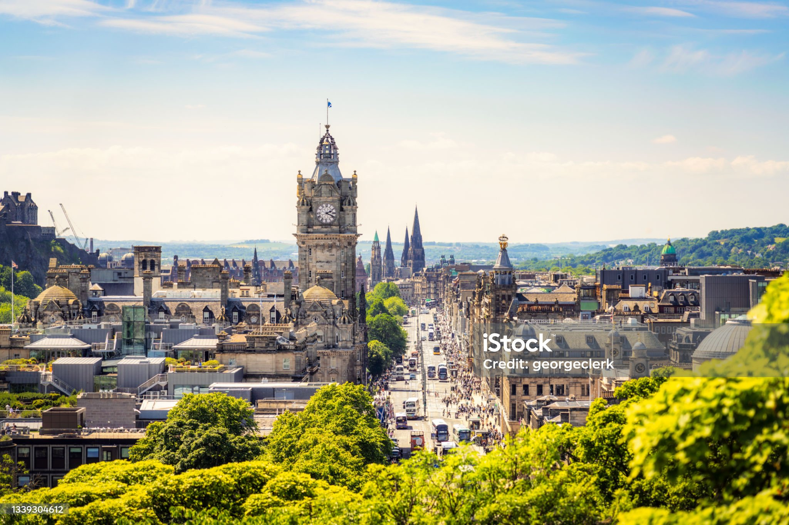
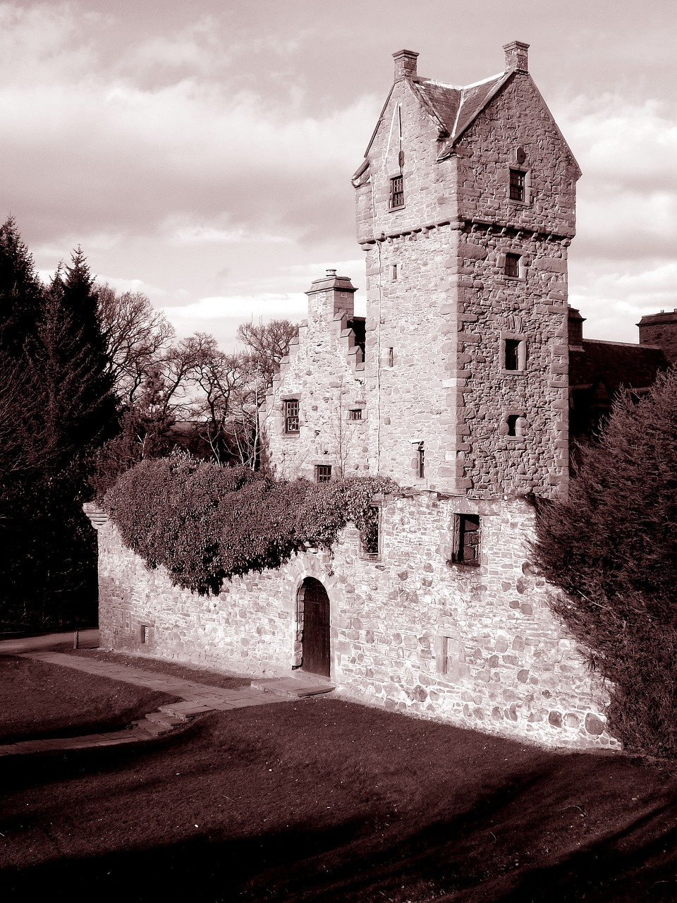
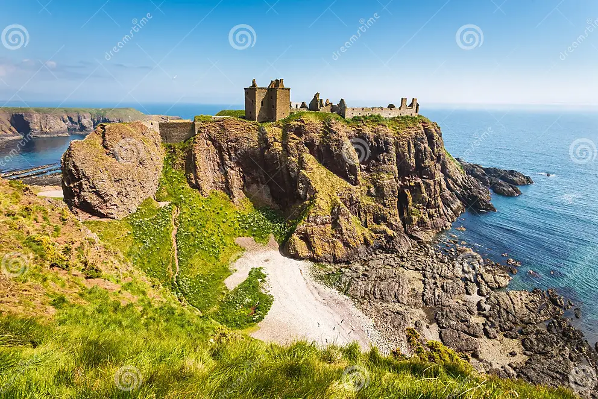
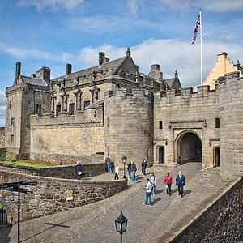

My picture

Hello, my name is Efthymios Andreopoulos, I am a student, I study in Edinburgh College the course Software Development and Web NPA.
| Country | City |
| Scotland | Edinburgh |
Edinburgh is Scotland's compact, hilly capital. It has a medieval Old Town and elegant Georgian New Town with gardens and neoclassical buildings. Looming over the city is Edinburgh Castle, home to Scotland’s crown jewels and the Stone of Destiny, used in the coronation of Scottish rulers. Arthur’s Seat is an imposing peak in Holyrood Park with sweeping views, and Calton Hill is topped with monuments and memorials.
Dundee is a coastal city on the Firth of Tay estuary in eastern Scotland. Its regenerated waterfront has 2 nautical museums: RRS Discovery, Captain Scott’s Antarctic expedition ship, and 19th-century warship, HM Frigate Unicorn. North of the water, Verdant Works is a museum celebrating the city’s jute-manufacturing heritage. The McManus: Dundee’s Art Gallery & Museum displays art and archaeological finds.
Aberdeen is a port city in northeast Scotland, where the Dee and Don rivers meet the North Sea. With an offshore petroleum industry, the city is home to an international population. It's also known as the ‘Granite City’ for its many enduring grey-stone buildings. The 19th-century Marischal College is typical – a monumental Victorian landmark that’s now headquarters of the City Council.
Livingston is the largest town in West Lothian, Scotland. Designated in 1962, it is the fourth post-war new town to be built in Scotland.
